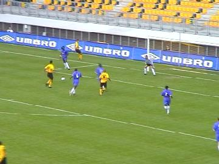
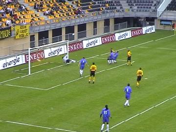

|
Roda JC - Chelsea (3-3) 10 augustus 2002 |
Het laatste oefenduel voor de competitie kent als
tegenstander het beroemde Chelsea met een groot
aantal Nederlandse spelers: Ed de Goeij, Boudewijn
Zenden, J.F. Hasselbaink en Melchiot.
Na 3 minuten scoort Christiano via een mooi strak
schot 1-0.
Ongeveer 40 Chelsea-supporters en een kleine vlag.
Verdedigend is het bij Roda nog steeds behelpen. Ook
na de komst van linksback Filipovic (ex-Obilic!!!!).
Hasselbaink (niet in beeld) omzeilt de buitenspelval
en kan in de 18e min. beheerst 1-1 inschieten.
Rudge speelt terug op de keeper die zijn handen moet
gebruiken. Dat levert deze vrije trap op.
Hasselbaink profiteert van deze buitenkans: 1-2 (22).

Anastasiou scoort 2-2 (33).
Voor een vriendschappelijke wedstrijd waren er veel
opstootjes.
In de rust volgt het afscheid van Regillio Vrede die na
zes jaar van Roda naar Thessaloniki verkast. Naast
hem zijn zoon, Nathallio en daarachter Theo Pickee.

Prachtig doelpunt van Tom Soetaers, 3-2 (53).
Grote vreugde!
De jongste Christiano-fan?
Chelsea komt op 3-3 door een doelpunt van De Lucas
na een voorzet van Babayaro (62).
De leuke wedstrijd eindigt in een gelijkspel. Zowel de
Roda- als de Chelsea-spelers bedanken hun supporters.
Na een uurtje vertoefd te hebben in de Kick-Off neemt
een delegatie van de Z16 KOEMPELS Z16 afscheid
van een van de meest sympathieke Roda-spelers aller
tijden; Regillio Vrede. REGILLIO, BEDANKT !!
Daarna werd het Heerlense uitgaansleven ingedoken
waar zich opvallend veel vrijgezellenparty's voltrokken.
Een fotosessie bij de plaatselijke koempel vormde een
mooi slot van deze gezellige voetbalavond.